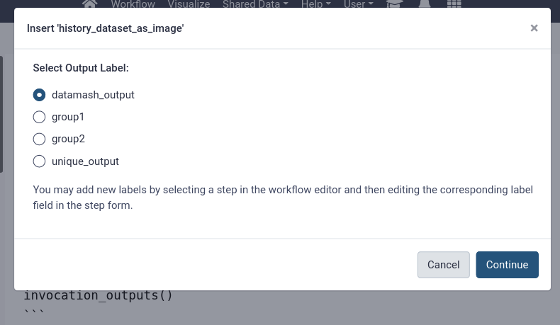
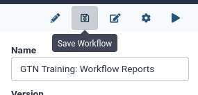
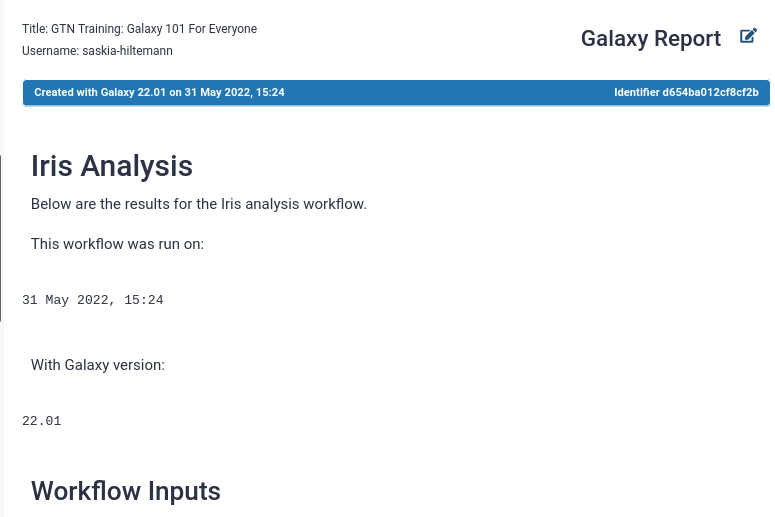
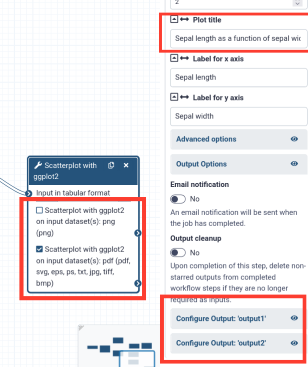
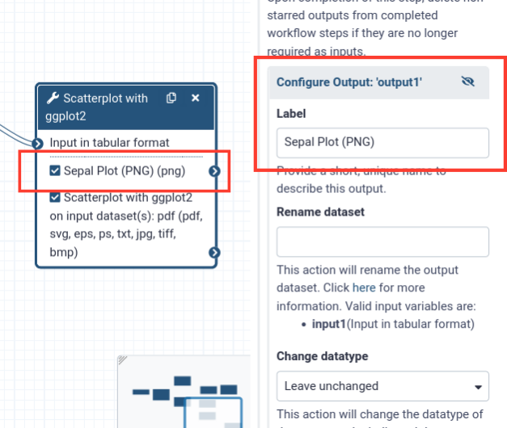

Workflow Reports
| Author(s) |
  Saskia Hiltemann Saskia Hiltemann
|
| Tester(s) |
 Helena Rasche Helena Rasche |
| Infrastructure |
 John Chilton John Chilton Aysam Guerler Aysam Guerler Marius van den Beek Marius van den Beek |
OverviewQuestions:
Objectives:
What are workflow reports?
How can I view a workflow report?
How can I customize a workflow report?
How can I share a workflow report with others?
Understanding, viewing and creating workflow reports
Time estimation: 30 minutesLevel: Intermediate IntermediateSupporting Materials:Last modification: Oct 18, 2022License: Tutorial Content is licensed under Creative Commons Attribution 4.0 International License. The GTN Framework is licensed under MITShort Link: https://gxy.io/GTN:T00165
Introduction
Workflows are a powerful Galaxy feature that allows you to scale up your analysis by performing an end-to-end analysis with a single click of a button. In order to aid interpretation of workflow results, workflow reports may be configured to combine and display the most important analysis results in a single, customizable view.
This is especially useful if you are configuring a Galaxy workflow to share with others. Not everybody is familiar with Galaxy, and having all the important results shown on a single page can be very useful.
This tutorial will guide you through the steps of defining such a report for your workflow, and how to view workflow reports after running the workflow.
AgendaIn this tutorial, we will cover:
Import an example workflow
For this tutorial, we will use the workflow from the Galaxy 101 for everyone tutorial. If you have not done this tutorial yet, the only thing you need to know is that this is a workflow that takes as input a table of data about different species of iris plants, this table is subsequently sorted and filtered, and some plots are made. The specifics of the workflow are not important for this tutorial, only that it outputs a number of different kinds of outputs (images, tables, etc).
We will start by importing this workflow into your Galaxy account:
Hands-on: Import the workflow
- Import the workflow into Galaxy
- Copy the URL (e.g. via right-click) of this workflow or download it to your computer.
- Import the workflow into Galaxy
- Click on Workflow on the top menu bar of Galaxy. You will see a list of all your workflows.
- Click on galaxy-upload Import at the top-right of the screen
- Provide your workflow
- Option 1: Paste the URL of the workflow into the box labelled “Archived Workflow URL”
- Option 2: Upload the workflow file in the box labelled “Archived Workflow File”
- Click the Import workflow button
Run the workflow and view the default report
Galaxy will produce a default report for any workflow. This default report shows the workflow inputs, outputs, and a description of the workflow on a single web page. You will usually want to customize this report yourself, but it provides a good starting point.
Let’s run the workflow and view the default report.
Hands-on: Run the workflow
Import Tool: upload1 the file
iris.csvvia linkhttps://zenodo.org/record/1319069/files/iris.csv
- Copy the link location
Open the Galaxy Upload Manager (galaxy-upload on the top-right of the tool panel)
- Select Paste/Fetch Data
Paste the link(s) into the text field
Press Start
- Close the window
- Run GTN Training: Galaxy 101 For Everyone workflow using the following parameters:
- “Send results to a new history”:
No- param-file “1: Iris Dataset”“: the
iris.csvfile we just uploaded
- Click on Workflow on the top menu bar of Galaxy. You will see a list of all your workflows.
- Click on the workflow-run (Run workflow) button next to your workflow
- Configure the workflow as needed
- Click the Run Workflow button at the top-right of the screen
- You may have to refresh your history to see the queued jobs
- View the workflow outputs galaxy-eye once the workflow has completed
- The workflow produces several text and tabular outputs, and two plot (image) outputs
After the workflow has completed, we can access the workflow report. The report does not appear in your history, but can be accessed from the User -> Workflow Invocations menu on the top bar. An invocation of a workflow means one run (execution) of the workflow.
Hands-on: View the default workflow report
In the top menu bar, go to User -> Workflow Invocations
- Our latest workflow run should be listed at the top.
- Click on it to expand it:
Click View Report in the expanded view of the workflow invocation.
- You should see a page like this. It contains:
- The input file
- The (text-based) output files
- A summary of the workflow itself


Customize the workflow report
This is a great start, but we might want to customize this report to fit our needs.
Hands-on: Open the workflow report editor
Open the workflow in the workflow editor
- In the top menu bar, click on Workflows
- Click on the name of the workflow you want to edit
- Select galaxy-wf-edit Edit from the dropdown menu to open the workflow in the workflow editor
Click on Edit Report galaxy-wf-edit in the top-right of the screen
- You should see something like the image below, you will find
- Text editor in the center, with the default report specified in Markdown format
- A list of components that can be added to the report in the left-hand panel
- Scroll down the report and look at all the components
- notice that there is no plot image output shown, even though we know that was created, we will add this to the report later.
- To edit this report, we can edit the markdown directly. For example, let’s
- change the title of the report to
# Iris Analysisadd a line of introduction text for whoever will read the report, something like:
# Workflow Execution Report# Iris analysis Below are the results for the Iris analysis workflow.The report is specified in Markdown format, this is a simple markup language that is commonly used. Some basics of the Markdown syntax can be found in this cheatsheet
- Let’s play around with some components we can add via the left-hand panel
- Under the Miscellaneous section in the left-hand menu, select
- “Galaxy version as text” and
- “Current Time as text”
- You will see bits of Markdown are added to your report
- You can add some text around these parts as well
Make sure the beginning of your report looks something like this:
# Iris Analysis Below are the results for the Iris analysis workflow. This workflow was run on: ```galaxy generate_time() ``` With Galaxy version: ```galaxy generate_galaxy_version() ```- Let’s try to add the missing plot outputs as well:
- On the left-hand panel, under the History section, choose Image
- You should see a list of outputs to insert into the report: 
- Hmmm, no obvious options to insert the plot outputs. We will need to label the outputs in our workflow first, before we can use them here.
- But before we do that, let’s save our changes and run the workflow again to view their effects.
- Click on galaxy-cross (Return to Workflow) in the top-right of the screen.
- Click on galaxy-save (Save Workflow) to save our changes to the report. 
- Run the workflow again
- Select
iris.csvas the input
- Click on Workflow on the top menu bar of Galaxy. You will see a list of all your workflows.
- Click on the workflow-run (Run workflow) button next to your workflow
- Configure the workflow as needed
- Click the Run Workflow button at the top-right of the screen
- You may have to refresh your history to see the queued jobs
View the new workflow report, you should see your changes, something like:
- Go to User on the top menu bar of Galaxy.
- Click on Workflow invocations
- Here you will find a list of all the workflows you have run
- Click on the name of a workflow invocation to expand it
- Click on View Report to go to the workflow report page
- Note: The report can also be downloaded in PDF format by clicking on the galaxy-wf-report-download icon.

In the next section, we will add labels to our workflow outputs to more easily add them to our workflow report


Add labels to workflow outputs
As you saw in the previous step, we might need to edit the workflow to add labels outputs so we can easily distinguish between the outputs when adding them to the report. This is especially useful for large workflows with many outputs.
Hands-on: Add output labels to the workflow
Open the workflow in the workflow editor
- In the top menu bar, click on Workflows
- Click on the name of the workflow you want to edit
- Select galaxy-wf-edit Edit from the dropdown menu to open the workflow in the workflow editor
- Click on one of the Scatterplot tool boxes
- On the right-hand panel, you should see the settings for the tool
- Scroll to the bottom and find the Configure Output: .. sections
- From the box we can see that output1 (the first) is a
pngoutput, and output2 is a- Let’s use the png output for our report.
- Also take note of the plot title, since we have 2 runs of the scatterplot tool in this workflow. One plot is about the petals of the iris, and one about the sepals (in this screenshot it is the sepal plot)

- Add an output label for the
pngoutput
- Click on “Configure output: output1”
- Add a descriptive label (e.g. “Sepal plot (PNG)”)
- Notice that the label on the box changs as well 
- Repeat this process and add an output label for the other plot as well
- Label it something like “Petal plot (PNG)”
- Click on the Unique tool toolbox
- This tool gives a list of all the unique Iris species found in the dataset
- Let’s add this to our report as well
- Add a label to this output (e.g. “Iris Species”)
- Save galaxy-save the workflow (Important!)
Now that we have added our output labels, let’s go back to our report editor and add these outputs
Hands-on: Open the workflow report editor
Open the workflow in the workflow editor (if not already open)
- In the top menu bar, click on Workflows
- Click on the name of the workflow you want to edit
- Select galaxy-wf-edit Edit from the dropdown menu to open the workflow in the workflow editor
- Click on Edit Report galaxy-wf-edit in the top-right of the screen
- You should see the report with the changes you made earlier
- Add the plots and the unique species list outputs to the report
- Use “Images” in the left-hand panel for the plot outputs
- Use “Dataset” for the unique species list
You should see more options now after the labels we added to the workflow outputs (“Sepal Plot (PNG)”, “Petal Plot (PNG)”, and “Iris Species”)
- Add some text and/or headers before each included output
- Play around here, add other component you think look interesting and see what happens!
The final result may look something like this:
# Results ## Species detected ```galaxy history_dataset_display(output="Iris Species") ``` ## Sepal plot ```galaxy history_dataset_as_image(output="Sepal Plot (PNG)") ``` ## Petal Plot ```galaxy history_dataset_as_image(output="Petal Plot (PNG)") ```Exit galaxy-cross the report editor
Save galaxy-save the workflow
- Run the workflow once more
- Use
iris.csvas input againView the workflow report
- Go to User on the top menu bar of Galaxy.
- Click on Workflow invocations
- Here you will find a list of all the workflows you have run
- Click on the name of a workflow invocation to expand it
- Click on View Report to go to the workflow report page
- Note: The report can also be downloaded in PDF format by clicking on the galaxy-wf-report-download icon.
It should look something like:


Well done! You have created a customized workflow report with text and workflow outputs. There are a lot more options to explore, for example you can also include:
- links to datasets for easy downloading
- index files (e.g. for BAM or VCF files)
- visualisations
- job metrics
- peeks into dataset (useful for large files that cannot be included in their entirety in the report)
- ..and more!
Share or publish your workflow report
If you share this workflow with others, they will get the same report every time they run the workflow.
If you would like to share the workflow report of a specific run, you can do so by creating a Galaxy page for it. This page can then be shared (either via link or with specific users), or published for all to see under Shared Data -> Pages in the top menu.
Open the workflow report
- Go to User on the top menu bar of Galaxy.
- Click on Workflow invocations
- Here you will find a list of all the workflows you have run
- Click on the name of a workflow invocation to expand it
- Click on View Report to go to the workflow report page
- Note: The report can also be downloaded in PDF format by clicking on the galaxy-wf-report-download icon.
- Click on Edit Markdown galaxy-wf-edit button at the top right (next to “Galaxy Report”)
Here you can edit the title and the report itself, if desired
Click Save galaxy-save
- You will see your list of Galaxy pages.
Note: this list is always accessible via top menu, User -> Pages
- Click on the dropdown icon galaxy-dropdown next to the page title
- Select “Share or Publish”
- Here you can make the page public or share with individual users
- If you make the page public, anybody will be able to see it under Shared Data -> Pages from the top menu bar


Great work! You have viewed, customized and shared a workflow report. This makes it easy to view the most important results of a workflow in a single view. Here is an example of a final workflow from this tutorial
Key points
Workflow reports help you display the most important results of a workflow in an organized fashion.
Workflow reports are configured as part of the workflow definition, for every run of the workflow, a report will be automatically created
Workflow reports can be viewed from the top menu, User -> Workflow Invocations.
Labels must be added to workflow outputs before they can be included
Many different components can be added to a workflow report (datasets, images, links to datasets, job metrics, text and sections, visualisations, and much more!)
Workflow reports can be shared as Galaxy Pages.
Frequently Asked Questions
Have questions about this tutorial? Check out the FAQ page for the Using Galaxy and Managing your Data topic to see if your question is listed there. If not, please ask your question on the GTN Gitter Channel or the Galaxy Help ForumFeedback
Did you use this material as an instructor? Feel free to give us feedback on how it went.
Did you use this material as a learner or student? Click the form below to leave feedback.

Citing this Tutorial
- Saskia Hiltemann, Workflow Reports (Galaxy Training Materials). https://training.galaxyproject.org/training-material/topics/galaxy-interface/tutorials/workflow-reports/tutorial.html Online; accessed TODAY
- Batut et al., 2018 Community-Driven Data Analysis Training for Biology Cell Systems 10.1016/j.cels.2018.05.012
@misc{galaxy-interface-workflow-reports, author = "Saskia Hiltemann", title = "Workflow Reports (Galaxy Training Materials)", year = "", month = "", day = "" url = "\url{https://training.galaxyproject.org/training-material/topics/galaxy-interface/tutorials/workflow-reports/tutorial.html}", note = "[Online; accessed TODAY]" } @article{Hiltemann_2023, doi = {10.1371/journal.pcbi.1010752}, url = {https://doi.org/10.1371%2Fjournal.pcbi.1010752}, year = 2023, month = {jan}, publisher = {Public Library of Science ({PLoS})}, volume = {19}, number = {1}, pages = {e1010752}, author = {Saskia Hiltemann and Helena Rasche and Simon Gladman and Hans-Rudolf Hotz and Delphine Larivi{\`{e}}re and Daniel Blankenberg and Pratik D. Jagtap and Thomas Wollmann and Anthony Bretaudeau and Nadia Gou{\'{e}} and Timothy J. Griffin and Coline Royaux and Yvan Le Bras and Subina Mehta and Anna Syme and Frederik Coppens and Bert Droesbeke and Nicola Soranzo and Wendi Bacon and Fotis Psomopoulos and Crist{\'{o}}bal Gallardo-Alba and John Davis and Melanie Christine Föll and Matthias Fahrner and Maria A. Doyle and Beatriz Serrano-Solano and Anne Claire Fouilloux and Peter van Heusden and Wolfgang Maier and Dave Clements and Florian Heyl and Björn Grüning and B{\'{e}}r{\'{e}}nice Batut and}, editor = {Francis Ouellette}, title = {Galaxy Training: A powerful framework for teaching!}, journal = {PLoS Comput Biol} Computational Biology} }
Funding
These individuals or organisations provided funding support for the development of this resource
This project (2020-1-NL01-KA203-064717) is funded with the support of the Erasmus+ programme of the European Union. Their funding has supported a large number of tutorials within the GTN across a wide array of topics.